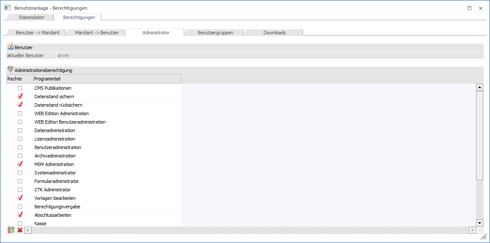
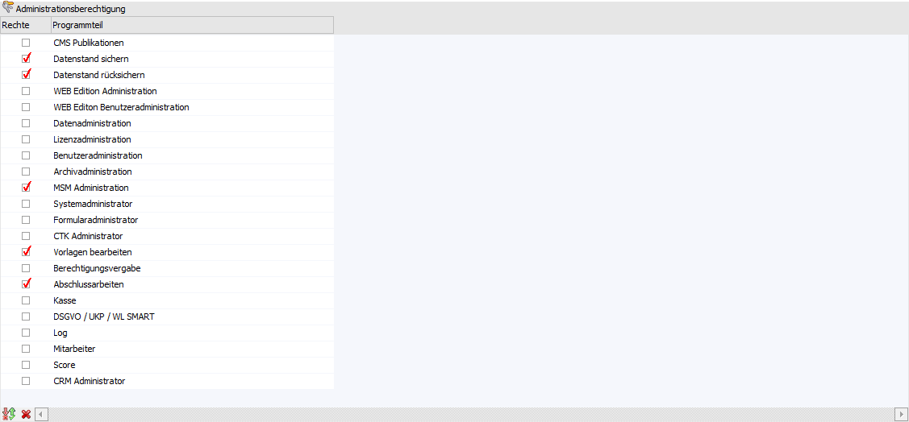
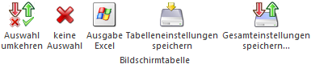

Im WinLine ADMIN und der WinLine START sind gewisse Menüpunkt bzw. Funktionen abhängig von den jeweiligen Administratorenrechten des Benutzers freigeschalten. Diese Administratorenrechte können an dieser Stelle durch Aktivieren der einzelnen Checkboxen vergeben werden.
Hinweis
Dieses Register kann nur dann bearbeitet werden, wenn der Benutzer kein Administrator ist (für Administratoren gibt es keine Einschränkungen).

Benutzer
Ø aktueller Benutzer
An dieser Stelle wird der aktuell gewählt Benutzer angezeigt. Für diesen werden die folgenden Einstellungen getätigt.
Administrationsberechtigung

Die Administratorenrechte sowie die Menüpunkte bzw. Funktionen die damit freigeschalten werden, sind wie folgt definiert:
CMS Publikationen
ü WEB Edition - Publikationen
Datenstand sichern
ü Datei - Sichern
Datenstand rücksichern
ü Datei - Rücksichern
WEB Edition Administration
ü WEB Edition - Setup
ü WEB Edition - Design
ü WEB Edition - Optionen
ü WEB Edition - Verwaltung
ü WEB Formular Editor
WEB Edition Benutzeradministration
ü Benutzer - WEB Benutzer
ü Benutzer - Benutzerliste (eingeschränkt auf WEB Benutzer)
Datenadministration
ü Datei - Datenbank Verbindungen
ü Datei - Mandanten gruppieren
ü Datei - Mandant löschen
ü Benutzer - Variablen Audit
ü Benutzer - Auditprotokoll löschen
ü System - Upsize Datenstand
ü System - Datentools
ü System - SQL Abfrage
ü System - SQL Datenbank erzeugen
ü System - Datenbank Wartung
Abgesehen von den Menüpunkten im ADMIN, hat dieses Administratorenrecht auch Auswirkung auf folgende Menüpunkte in WinLine START bzw. WinLine FAKT:
ü WinLine START - Cockpit-Ribbon - Cockpit-Zuordnung => Diverse Zusatzfunktionen stehen zur Verfügung (nähere Information entnehmen Sie bitte dem Kapitel "Cockpit-Zuordnung")
ü WinLine START - Datei - Grafik importieren => Anzeige des Bereichs "Google Bilder"
ü WinLine START - Parameter - Applikationsparameter
ü WinLine START - Optionen - Zusatzfelder
ü WinLine START - Optionen - Eigenschaften
ü WinLine START - Optionen - CRM Historien Eigenschaften
ü WinLine START - Abschluss - Jahresabschluss
ü WinLine START - Abschluss - Reorganisieren
ü WinLine START - Abschluss - Vertreter-Init
ü WinLine FAKT - Auswertungen - Kundenumsatzliste => Button "Roherträge aktualisieren"
ü WinLine INFO - Info - Einstellungen - Einstellungen-Ansicht => Anzeige aller angelegten Benutzer
ü WinLine INFO - Business Intelligence - Datenquellenverwaltung => Diverse Zusatzfunktionen stehen zur Verfügung (nähere Information entnehmen Sie bitte dem Kapitel "Datenquellenverwaltung")
ü WinLine INFO - Business Intelligence - Datenquellen - Matchcode => Erzeugung von Views
Lizenzadministration
ü Daten - Lizenz eingeben
Benutzeradministration
ü Benutzer - Benutzeranlage
ü Benutzer - WEB Benutzer
ü Benutzer - Benutzerliste
ü Benutzer - Benutzer Gruppen
ü Benutzer - Benutzerspezifische Einträge
Archivadministration
ü Archiv - Analyse (dieser Menüpunkt ist dadurch auch im WinLine START verfügbar oder nicht)
ü Archiv - Beschlagwortung - Definition
ü Archiv - Beschlagwortung - Beschlagwortung mittels Formular
ü Archiv - Beschlagwortung - Formulartyp
ü Archiv - Beschlagwortung - Beschlagwortung
ü Archiv - Beschlagwortung - Beschlagwortungsliste
ü Archiv - Archiv Parameter
ü Archiv - Exporteinstellungen
ü Archiv - Archiv verschieben
ü Archiv - Archiv umbenennen
ü Archiv - Eintrag löschen
ü Archiv - Archiv Journal
ü Archivdatei entpacken
ü Archiv - Archiv reorganisieren
MSM Administration
ü MSM - MSM
ü MSM - Installations Wizard
ü MSM - Update Wizard
ü MSM - Workstation Wizard
ü MSM - Server Wizard
ü MSM - MDP Projekt importieren
Systemadministrator
ü Datei - Netzwerkpfad
ü Monitor
ü System - Upsize System auf SQL Server
ü System - Downsize System vom SQL Server
Formularadministrator
ü Formular bearbeiten (über rechte Maustaste) bei allen Formularen
ü WinLine START, Menüpunkt Parameter/Formulare bearbeiten
ü Formular-Editor (CWLPDFE.EXE)
CTK Administrator
ü CTK-Menüeinträge Auswertung
ü Customizing Tool Kit (CWLCTK.EXE)
Vorlagen bearbeiten
ü WinLine START - Vorlagen - Vorlagen Anlage
ü WinLine START - Vorlagen - Vorlagen exportieren
ü WinLine START - Vorlagen - Vorlagen Parameter
ü WinLine START - Vorlagen - Workflowvorlagen
Berechtigungsvergabe
ü Berechtigungsprofile
ü Variablen Sperren
ü WinLine - Objektberechtigungen (überall)
Abgesehen von den Menüpunkten im ADMIN, hat dieses Administratorenrecht auch Auswirkung auf alle Bereiche in WinLine, bei denen die Möglichkeit besteht ein Berechtigungsprofil zu hinterlegen (über die Auswahlbox "Berechtigung"). Dort steht diesen Benutzern der Eintrag ">> Neues Profil" zur Verfügung.
Abschlussarbeiten
ü WinLine START - Abschluss - Jahresabschluss
ü WinLine START - Abschluss - Datencheck
Wurde neben diesem Administrationsrecht auf das Recht "Datenstand sichern" aktiviert, so können bei einer Datensicherung nur noch jene Mandanten ausgewählt werden, für welche ein Zugriffrecht besteht. Die weiteren Sicherungsarten (z.B. "Systemtabellen") stehen nicht zur Verfügung.
Kasse
ü WinLine FAKT - Stammdaten - Kassen-Stammdaten
ü WinLine FAKT - Erfassen - Kassentableau Zuordnung (alle Tableaus und Benutzer)
ü WinLine FAKT - Erfassen - Kassen-FinanzOnline-Meldung
Zusätzlich haben Benutzer mit Administrationsberechtigung "Kasse" die Möglichkeit alle Kassen und Zahlungsmittelkonten in den Menüpunkten "Kassen-Übersicht" und "Kassen-Abschluss" im Modul FAKT auszuwerten.
DSGVO / UKP / WL SMART
ü WinLine START - Optionen - Eigenschaften
ü WinLine START - Optionen - CRM Historien Eigenschaften
ü WinLine INFO - PDMS - PDMS
ü WinLine INFO - PDMS - Bestätigungsauswertung
ü WinLine INFO - Auskunftserteilung - Kontenauskunft
ü WinLine INFO - Auskunftserteilung - Kontakteauskunft
ü WinLine INFO - Auskunftserteilung - Arbeitnehmerauskunft
ü WinLine INFO - Auskunftserteilung - Vertreterauskunft
Zusätzlich haben Benutzer mit Administrationsberechtigung "DSGVO / UKP / WL SMART" die Möglichkeit alle Auskunftsmenüpunkte auszurufen. Des Weiteren stehen, neben dem Lesen der Bücher im "PDMS", noch folgende Programmbereiche zur Verfügung:
ü Anlegen / Editieren / Löschen von Büchern
ü Anlegen / Editieren / Löschen von Deckblättern
ü Hinzufügen / Löschen von Uploads
ü Ausführen weiterer Aktionsschritte (inklusive Freigabe Mail senden)
ü Anzeige der Historie des Deckblatts
ü Buch Export / Import
Log
ü WinLine START - Optionen - Aktivitäten-Log
Mitarbeiter
ü WinLine INFO - SMART - Mitarbeiterinfo
ü WinLine INFO - SMART - Mitarbeiterstamm
ü WinLine INFO - SMART - Stammdaten - Arbeitnehmergruppen
ü WinLine INFO - SMART - Stammdaten - Zeitartenstamm
ü WinLine INFO - SMART - Stammdaten - Zeitartengruppen
ü WinLine INFO - SMART - Stammdaten - Lohnartenstamm
ü WinLine INFO - SMART - Stammdaten - Konstantenstamm
ü WinLine INFO - SMART - Stammdaten - Firmenkalender
ü WinLine INFO - SMART - Stammdaten - Benutzer Objekt Berechtigungen
Score
Mit dieser Berechtigung können im WinLine SMART SCORE "Spiele" angelegt und administriert werden.
CRM Administrator
ü WinLine INFO - CRM - Workflow Editor
ü WinLine INFO - CRM - Workflow Wizard
Tabellenbuttons

Ø Auswahl umkehren
Durch Anklicken des Umkehr-Buttons wird die bestehende Selektion invertiert.
Ø Keine Auswahl
Durch Anklicken des Buttons "keine Auswahl" werden alle getroffenen Selektionen gelöscht.
Ø Ausgabe Excel
Durch Anwahl des Buttons "Ausgabe Excel" wird der Inhalt der Tabelle an Microsoft Excel übergeben.
Ø Tabelleneinstellungen speichern
Die Spalten einer Tabelle können grundsätzlich an beliebige Positionen verschoben, bzw. in der Breite entsprechend angepasst werden. Durch Anwahl des Buttons "Tabelleneinstellungen speichern" werden die Einstellungen benutzerspezifisch gespeichert und bei dem nächsten Aufruf des Programmpunktes wieder vorgeschlagen.
Ø Gesamteinstellungen speichern
Im Gegensatz zu "Tabelleneinstellungen speichern" können mit "Gesamteinstellungen speichern" mehrere Tabellenaufbauten gespeichert und nach Wunsch geladen werden. Zusätzlich werden Sonderfunktionen der Tabelle (z.B. "Spalte gruppieren") ebenfalls bei der Speicherung bedacht.